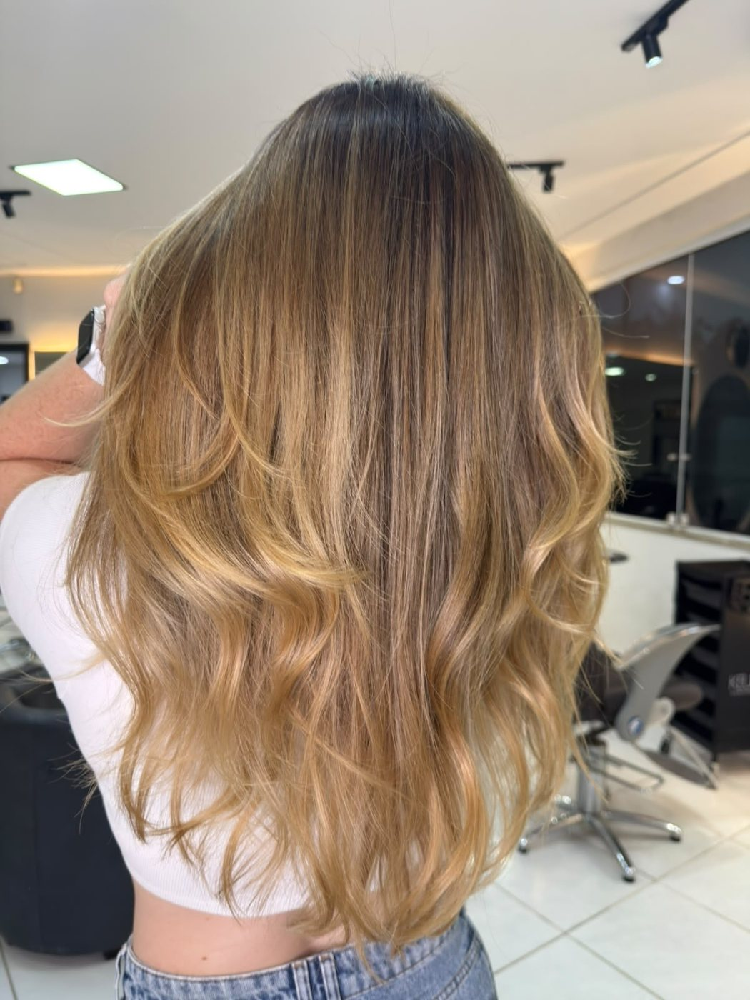
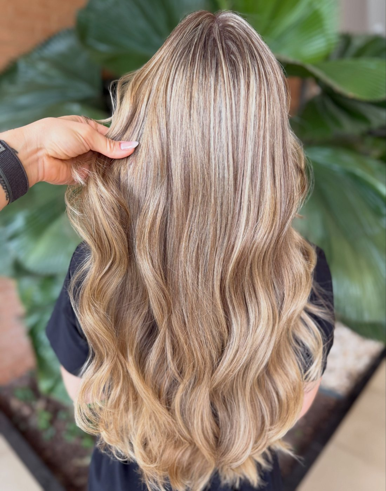
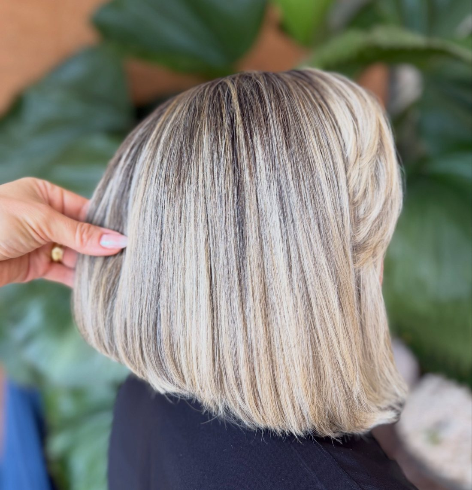
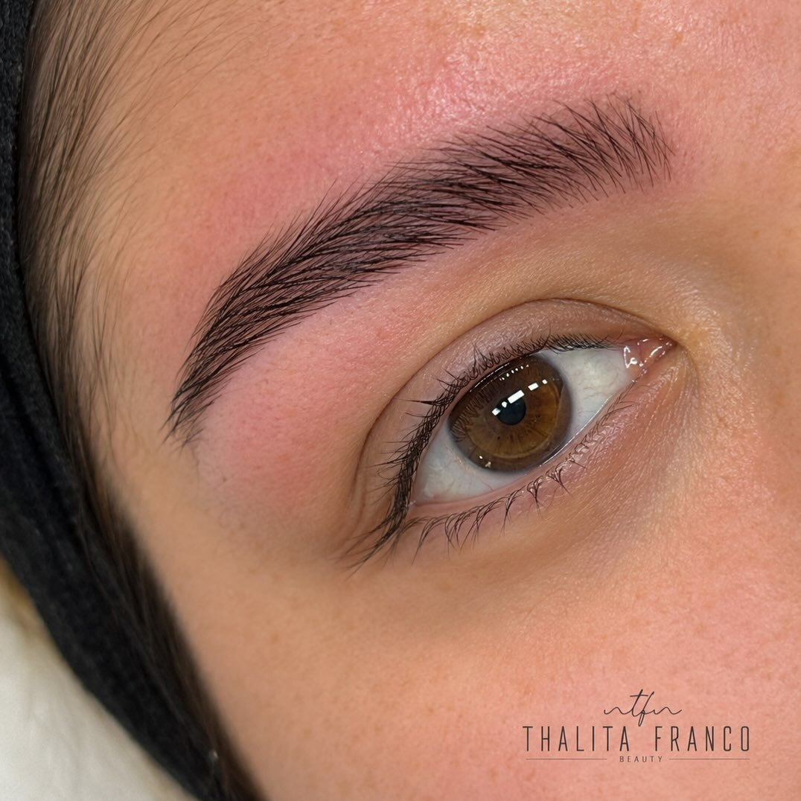
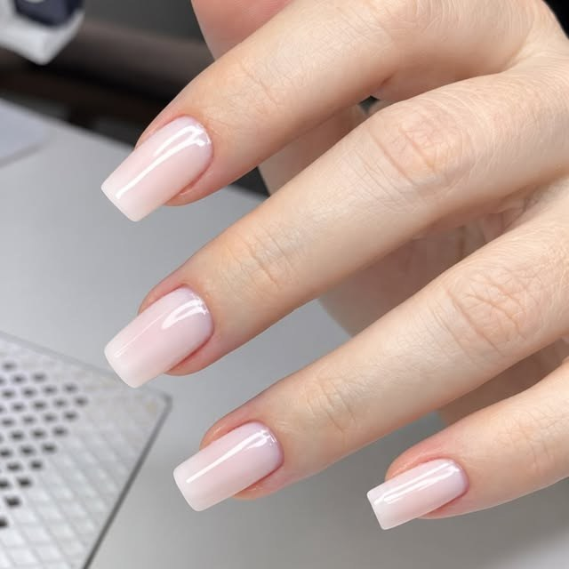
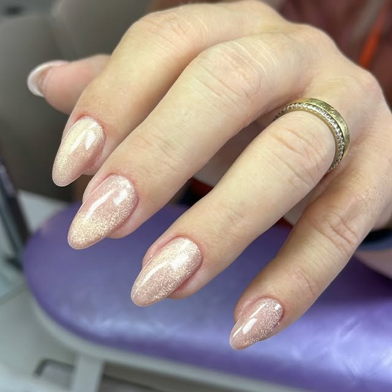

Unidade
Parque Prado
Av. São José dos Campos, 1422
Jardim Nova Europa · Campinas
4,6 148 avaliações no Google · telefone (19) 3238-9776

Transforme-se na sua melhor versão. Há quase vinte anos, mães e filhas confiam o cabelo à equipe do Ismael, com produtos de qualidade e um atendimento que faz a gente se sentir em casa.
Cabelo, unhas, sobrancelha e pele no mesmo endereço. Fale com a unidade para saber valores, pacotes e o profissional ideal para você.
Corte feminino e masculino, coloração, mechas, loiros, escova e tratamentos.
p. 02Design e acabamento para valorizar o olhar, e buço na linha.
p. 03Unhas bem cuidadas e nail design, com opção de pacote.
p. 04Para o dia a dia, o evento ou a foto que vai ficar para sempre.
p. 05Cuidados com a pele e depilação, feitos com calma e atenção.
p. 06Saúde e conforto para os pés, com atendimento especializado.
p. 07Trabalhos recentes da equipe, direto do Instagram do salão. Toque para ampliar.

“O salão é ótimo, produtos de qualidade e conta com excelentes profissionais.”Cliente há quase 20 anos · Google




Mais trabalhos, todos os dias, em @ismaellfernandesstudiohair
Tem cliente que corta com a mesma pessoa há quinze anos. Tem quem se mudou de cidade e continua voltando para fazer o cabelo aqui. Não é à toa: é o tipo de lugar que vira hábito.
Ambiente acolhedor, equipe especializada em cada área e duas unidades em Campinas, para você escolher a mais perto.

Ismael Fernandes · desde a chegada
As clientes contam: o atendimento começa na porta, com café, água e um cappuccino com Nutella que já virou assunto nas avaliações.
Depois, é com a equipe: cada profissional na sua especialidade, do loiro à unha, da sobrancelha à maquiagem.
Quero agendar“Profissionais nota 10, ambiente agradável e acolhedor.”Cliente · Parque Prado · Google
“Ótimo atendimento, excelentes profissionais, ótimos produtos e valor justo.”Cliente · Swiss Park · Google
“Ali eu me sinto em casa.”Cliente · Swiss Park · Google
Cada unidade tem o seu WhatsApp. Escolha a mais perto e agende o seu horário.
Av. São José dos Campos, 1422
Jardim Nova Europa · Campinas
4,6 148 avaliações no Google · telefone (19) 3238-9776
Av. Francisco Alfredo Júnior, 593
Swiss Park · Campinas
4,8 76 avaliações no Google
Horário das duas unidades. Em feriados pode mudar: confirme pelo WhatsApp.